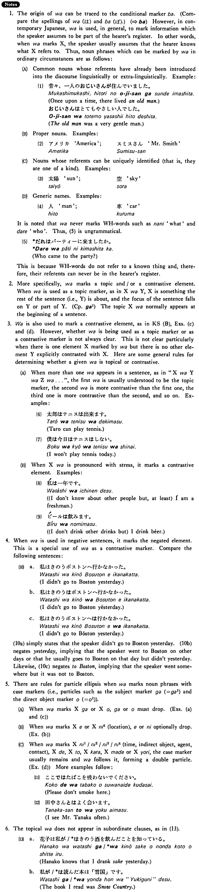

は (1) (B. 516)
- (ksa).
- 私は学生だ・です。
- I am a student.
- (ksb).
- 杉田さんは行きますが私は行きません。
- Mr. Sugita will go (there) but I won't go.
- (a).
- ジョーンズさんは今日本語を勉強している。
- Mr. Jones is studying Japanese now.
- (b).
- この町には大学が二つある。
- There are two universities in this town.
- (c).
- 私はビールは飲みますが酒は飲みません。
- I drink beer but don't drink sake.
- (d).
- 春子には人形を、秋子には絵本をあげた。
- I gave Haruko a doll and Akiko a picture book.
